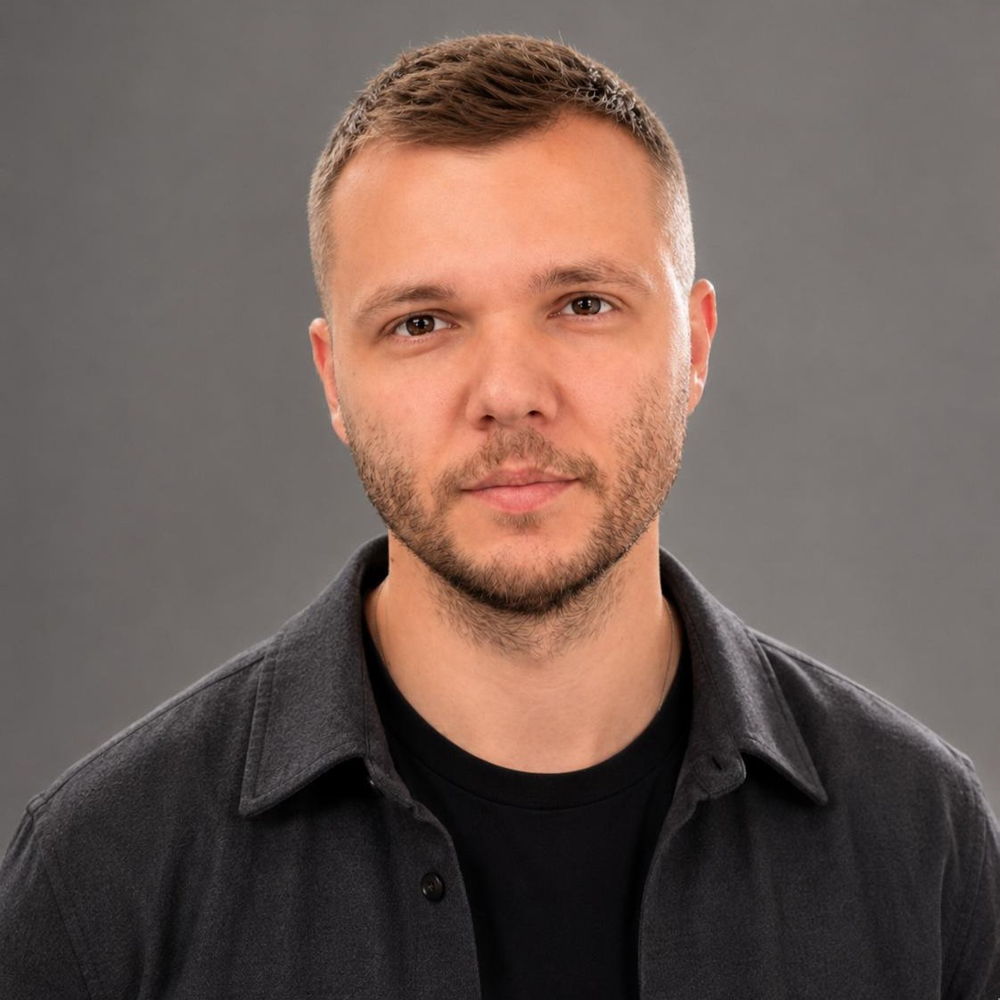

Андрей Макаревич· Product Designer
Резюме · 2026

Андрей Макаревич
Продуктовый дизайнер · Senior
Проектирую интерфейсы для финтеха, кибербезопасности и enterprise. Разбираюсь в сложной логике, упрощаю сценарии и довожу решения до релиза.
5+ лет опытаСанкт-ПетербургB2B / B2CФинтех & Enterprise
Где работал
2024 — сейчас
Positive Technologies
Продуктовый дизайнер · Киберполигон и багбаунти
2023 — 2024
Альфа-Банк
Продуктовый дизайнер · Подписка и финтех
2021 — 2023
MTS Digital
UI/UX-дизайнер · CRM и коммуникации
Positive Technologies
Июнь 2024 — сейчас
Проектирую сценарии Cyberrange и работу с отчётами об уязвимостях в BugBounty. Переработал подачу и обработку отчётов, спроектировал статусы и уведомления.
Скорость прохождения заданий выросла на 22%; время валидации отчётов сократилось на 18%.
Альфа-Банк
Май 2023 — июнь 2024
Проектировал семейную подписку «Альфа-Смарт» для iOS, Android и web. Проверил прототипы с 15 респондентами. Согласовал между двумя командами функцию расходов дополнительных держателей карт.
После запуска продукт набрал 32 111 подписок и принёс 1,1 млн руб. выручки за первый месяц.
MTS Digital
Апрель 2021 — май 2023
Проектировал чат-центр для операторов и B2B-сервис коммуникаций. Менял сценарии на основе исследований и аналитики, создавал быстрые ответы и отчётность.
Время обработки диалога снизилось с 900 до 580 секунд; дневной объём вырос с 1000 до 2000 диалогов.
Андрей Макаревич· Product Designer
Резюме · 2026
Что изменилось в продуктах
Три примера работы со сложными сценариями и измеримыми результатами.
−18%
время валидации отчётов
BugBounty · Positive Technologies
Переработал путь подачи и обработки отчётов об уязвимостях. Добавил статусы и уведомления, чтобы участники видели ход проверки.
В Cyberrange оптимизировал тренировочные сценарии: скорость прохождения заданий выросла на 22%.
32 111
подписок за первый месяц
«Альфа-Смарт» · Альфа-Банк
Разобрал требования, собрал User Flow и прототипы, провёл юзабилити-тестирование с 15 респондентами. Передал интерфейсы для iOS, Android и web в разработку.
Выручка продукта за первый месяц после запуска — 1,1 млн руб.
900 → 580
секунд на диалог
Чат-центр · MTS Digital
Исследовал работу операторов и изменил их ежедневные сценарии. Спроектировал управление диалогами, быстрые ответы и отчётность.
Дневной объём обработки вырос с 1000 до 2000 диалогов.
ИНСТРУМЕНТЫ И ПОДХОД
Исследования и прототипы
User Flow, интервью, юзабилити-тестирование, аналитика интерфейсов, Figma и дизайн-ревью.
AI в работе
Использую Codex и настроенный мной инструмент для сборки React-прототипов по требованиям и публикации кода на GitHub.
ОБРАЗОВАНИЕ И ЯЗЫКИ
Тверской государственный университет
Бакалавриат · Управление персоналом
Тверской институт экономики и менеджмента
Бакалавриат · Менеджмент
Русский — C2 · Английский — B1